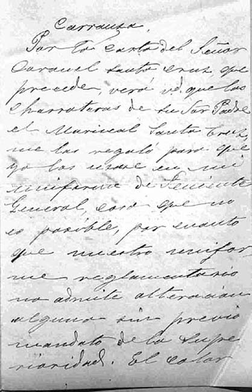

|
|  |
|
Simón Andrés de la Cruz a Donato Alvarez, seguido de una carta de Donato Alvarez a Adolfo P. Carranza
|
Carranza wrote personally to members of the oligarchy in order to convince them to donate their family relics to the new museum, whose list of donors –published in the institution's own journal, El Museo Histórico– reads like a whose is who of Argentine upper-class society at the time. Most items were portraits of ancestors who had fought in the independence wars or military memorabilia (weapons, uniforms, medals, etc.), which usually came with small biographies and/or descriptions of the objects that were quoted or reprinted entirely in El Museo Histórico (Carranza was –as he himself admitted in one of the prologues of the journal– too busy collecting an asset of 'historical' objects to invest much time into cklassifying and labelling them. Instead, El Museo Histórico and its sequel, La Ilustración Histórica, were circulated to schools and army barracks, whose 'captive audiences' would be treated to group visits after having duly studied the subject so as to be able to appreciate the emotional value of the objects on site: 'al fundarlo [al Museo] se ha tenido en vista principalmente que sirva para inculcar a los niños el amor a nuestros próceres y el conocimiento del pasado por medio de los retratos y objetos.'
|